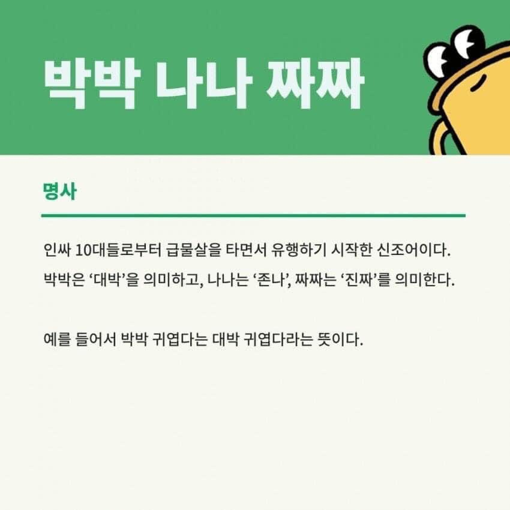

🤦♀️'박박 배고파' 요즘 10대들의 유행어
박박 배고파서 나나 짜증나 짜짜 햄버거 먹고 싶다아ㅠ
"요즘 박박이 유행하던데 이게 뭔 뜻이냐?"
10대 동생을 둔 20대 언니의 카톡 대화본이 화제되면서 20대들은 자신들이 모르는 신조어 등장에 신기해하고 있는데요.
중요한 건......우리 집 유일한 10대인
정인이는 이 신조어를 모른다는거에요.🤣
그래서 몇 가지 예문을 들고 왔어요!
요즘 애들 박박 어이없어 짜짜 신기해.
코로나 때문에 놀러도 못가고ㅠ박박 억울해
짜짜 펜트하우스보다 미친 드라마 있으면
나오라고 해!ㅠㅠㅠ제발...
밑에 각 뜻을 적어둔 사진이 있으니
위 예문을 해독해보세요!
👇👇👇
